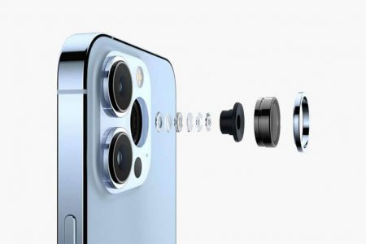

-
تکنولوژی

نگاهی به فناوری دوربین آیفونها در یک دهه اخیر؛ گوشیهای اپل چقدر پیشرفت داشتهاند؟
آیفونها همیشه به عنوان یکی از بهترین گوشیهای هوشمند دنیا در زمینه دوربین شناخته شدهاند. در حقیقت بخش بزرگی از زمانی که گوشیهای اپل در بازار حضور داشتهاند، یا بهترین دوربین را داشتهاند یا در ...
آیفونها همیشه به عنوان یکی از بهترین گوشیهای هوشمند دنیا در زمینه دوربین شناخته شدهاند. در حقیقت بخش بزرگی از زمانی که گوشیهای اپل در بازار حضور داشتهاند، یا بهترین دوربین را داشتهاند یا در جمع بهترینها بودهاند. حالا که فاصله نسبتا کوتاهی تا معرفی آیفون 14 داریم، میخواهیم نگاهی به فناوری دوربین آیفون ها در یک دهه اخیر یعنی از آیفون 5 در سال 2012 تا به امروز داشته باشیم.
اپل معمولا روی رزولوشن دوربینهایش تمرکز نمیکند و بجای بازی با اعداد، کیفیت آنها را بهبود میدهد و به همین دلیل دوربینهای 64 یا 108 مگاپیکسلی روی آیفونها نمیبینیم، البته شاید امسال این رویکرد تغییر کند و آیفون 14 پرو و پرو مکس دوربین اصلی 48 مگاپیکسلی داشته باشند. اما دوربین آیفون ها در یک دهه اخیر چه تغییراتی داشتهاند؟

دوربین آیفون ها در یک دهه اخیر
اگر جداول و نمودارهای موجود در این زمینه را مدنظر قرار دهیم، نخستین نکته چشمگیر این است که دوربین آیفون در بخش رزولوشن پیشرفت چندانی نداشتهاند. آیفون 4 دوربینی 5 مگاپیکسلی داشت و مدل 4s آن را با یک نسخه 8 مگاپیکسلی جایگزین کرد.
رزولوشن مذکور چند سال بیتغییر باقی ماند تا اینکه سال 2015 با یک دوربین 12 مگاپیکسلی بروزرسانی شد و از آن زمان تاکنون همچنان تغییری در آن صورت نگرفته است. این امر شامل دوربینهای تلهفوتو و اولترا واید هم میشود که به مرور به گوشیهای اپل افزوده شدند. امروزه حتی دوربین سلفی آیفونها نیز 12 مگاپیکسلی است.
البته بنابر گمانهزنیهای متعدد، انتظار میرود اپل امسال سرانجام رزولوشن دوربین گوشیهایش را افزایش دهد که در این زمینه بیشتر شبیه محصولات اندرویدی شود، هرچند تضمینی وجود ندارد که رزولوشن بالاتر به معنای کیفیت بهتر باشد. احتمال دارد مدلهای پرو آیفون 14 به دوربین 48 مگاپیکسلی مجهز شوند اما کاربران مدلهای پایه همچنان باید با دوربینهای 12 مگاپیکسلی سر کنند.
اگر دوباره سر بحث رزولوشن بازگردیم، باید به این نکته هم اشاره کنیم که تراشههای سری A اپل از قدرت بالایی برخوردارند اما تاکنون هیچ آیفونی امکان فیلمبرداری 8K را برای کاربران فراهم نکرده. علت این امر به محدودیت حسگرها برمیگردد زیرا رزولوشن 12 مگاپیکسلی قادر به چنین کاری نیست.
همچنین در خصوص تفاوت میان نسخههای پایه یا استاندارد با مدلهای پرو و پلاس باید گفت که رویه مذکور با عرضه آیفون 6 آغاز شد. در این نسل تنها مدل پلاس بود که از لرزشگیر اپتیکال یا OIS پشتیبانی میکرد و این روال در 6s و 6s پلاس نیز به همین شکل ادامه یافت.